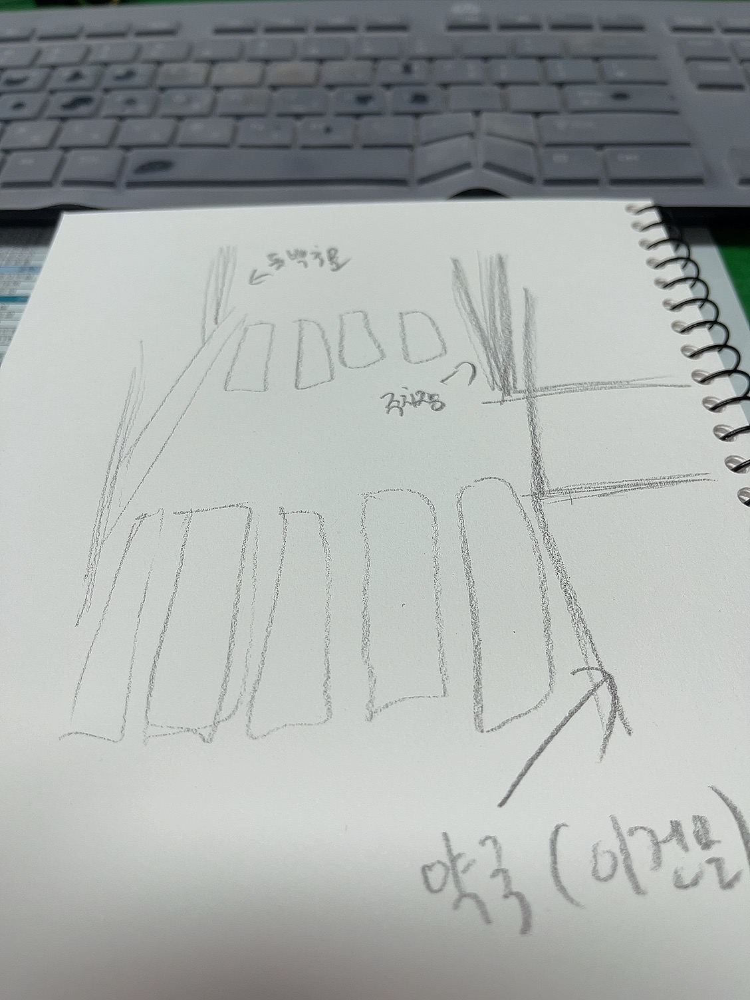

흥행몬은 훌륭한 그림 실력을 가진 것으로 알려져있음. 이는 어렸을 때부터 좋아하던 만화(씹덕)들이 큰 영향을 주었기 때문으로 분석됨. 대학 졸업 이후 먹고 살 궁리를 하다가 현여친의 직업(직무)을 가까이에서 접하게 되고 현재 만화 편집자를 목표로 그림을 전문적으로 공부하기 시작함. 현재는 기본적인 도형들을 반복적으로 그리며 선 연습을 종이와 태블릿, 두 수단을 모두 이용하여 하고 있는 것으로 알려짐.
